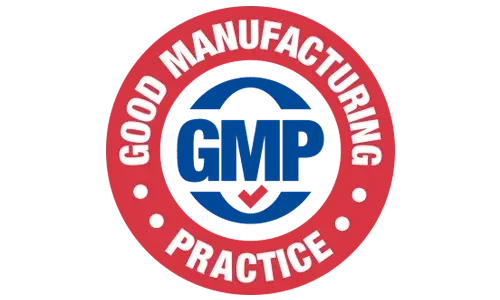
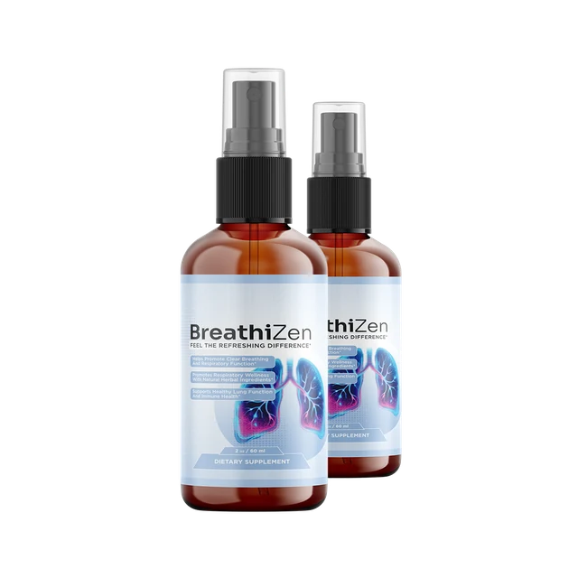
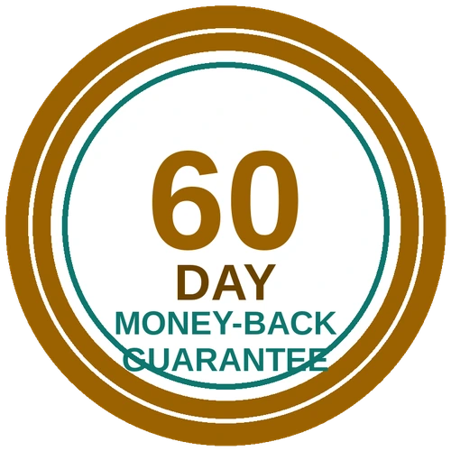

1 BOTTLE
1 Bottle
100 servings, about 100 days
100servings in one bottle
$69 / bottle
- A simple first order
- Standard shipping
- One payment, no auto-billing
- 60-day money-back guarantee
$69 total
Check Price: 1 BottleBreathiZen is a once-a-day oral spray for adults who want one quick, simple step to look after their breathing. Shake the bottle, press four pumps and carry on with your day, with nothing to swallow and no water needed. This site shows you the ingredients, the safety notes and the prices plainly, and says clearly that it is not a treatment for any breathing condition.
| Format | Oral spray, 2 oz (60 mL) |
|---|---|
| Serving | 4 sprays (0.60 mL), once daily |
| Packs | 1, 3 or 6 bottles, $69 to $49 each |
| Free shipping | On 3 and 6 bottles |
| Made for | Adults 18 and over* |
| Not a | Treatment for asthma or any breathing condition |
Secure payment · 60-day guarantee

Breathe in as the circle grows and out as it shrinks. An illustration of a calm breathing pause, not a measurement.
A short, open label, three plain plant extracts, a simple routine and 60 days to decide. Start with the ingredients or safety and precautions.
As stated by the seller.
Mullein, ginger and lemon.

As stated by the seller.
One 154 mg blend, shown in full.
Read the ingredients and the safety notes before you decide.

BreathiZen is a dietary supplement that goes straight into the mouth as a spray, for people who want one quick step instead of a handful of capsules. It is made to support clear airways, healthy lung function and immune function.* See what BreathiZen is.
The blend holds mullein leaf extract, ginger root extract and organic lemon extract, 154 mg in total per serving. See the ingredients.
It is not a drug, and it never replaces an inhaler, a prescription or a doctor's advice.
See BreathiZenBreathiZen comes as one, three or six bottles at $69, $59 and $49 each. Each bottle holds 100 servings, the 3 and 6 bottle packs ship free and every order is covered by a 60-day guarantee. See the pricing page, the guarantee and safety and precautions.
100 servings, about 100 days
$69 total
Check Price: 1 Bottle600 servings

$294 total, free shipping
Check Price: 6 Bottles300 servings
$177 total, free shipping
Check Price: 3 BottlesSavings are per bottle against the $69 single-bottle price. Confirm the live total, shipping and the refund policy at checkout before you pay.
Price per bottle, drawn to scale.

The seller covers every order for 60 days. If BreathiZen is not what you hoped, you contact customer care before day 60 and the seller says it will arrange your refund. Read the exact terms at checkout. See the refund policy.
Order With the 60-Day GuaranteeFrom $69 a bottle on one to $49 on six, each bottle with 100 servings. See pricing.
Healthy breathing depends on not smoking, clean air, movement, a healthy weight, managing any medical condition and your doctor's care, and no spray replaces those. BreathiZen is offered as one small daily step, four sprays, for adults who would rather not swallow capsules.* See daily habits for easy breathing.
The honest limits are worth stating. The three plant extracts are traditional ingredients with limited human evidence, the label gives one total for the blend, and this site promises no change in lung function.* See the benefits and how to read a proprietary blend label.
One idea from the seller is worth keeping: take your spray as a cue to pause for three slow breaths. See slow breathing exercises for a calmer day.
Fresh air most days.
Three slow breaths.
Smoke and irritants.
See your doctor regularly.
Tap an ingredient for the short version.*
In short: Traditional leaf, named first on the label.*
Mullein (Verbascum thapsus) is a tall plant with broad, fuzzy leaves that has a long history in herbal traditions, often as a tea. The label lists the leaf extract at a 10:1 concentration, first in the blend.
In short: A warming root used in food and tea.*
Ginger (Zingiber officinale) is the peppery root found in cooking and tea, and its extract carries natural plant compounds such as gingerols.
In short: A citrus note that keeps the taste fresh.*
Lemon extract adds a light citrus taste so the daily habit stays pleasant, and it also carries some natural plant compounds.
In short: The base that carries the blend.*
The label lists purified water, glycerin, natural flavors, citric acid, potassium sorbate and sodium benzoate. Together they make the liquid, keep it fresh and give it its taste.
The label gives one total of 154 mg per serving for the three plant extracts together, so the amount of each is not shown. The base also includes preservatives, so it is not "100% natural". Compare the ingredients page with your own bottle and read safety and precautions.
Check the panel on your own bottle.
Three plant extracts, one 154 mg blend and 60 days to decide. See pricing and the guarantee.
Please read this before you order.
Healthy adults 18 and over with no plant or citrus allergy who take no interacting medicine.*
Anyone with asthma, COPD or another breathing condition, anyone on blood thinners or other medicine, and anyone with an allergy to plants or citrus.
Anyone under 18, pregnant or nursing without a doctor's advice, or anyone using it instead of prescribed treatment.
The label says to shake well and spray 4 pumps directly into your mouth or onto your tongue once daily. See how BreathiZen works and how to use it.
Shake the bottle well.
Four pumps, once daily.
Three slow breaths.
Same time tomorrow.*
The label says one serving of four sprays a day, so a cue you already have makes it easy to remember. This planner is a demo and saves nothing. See the daily routine.
I will take my BreathiZen as the label directs after brushing my teeth.
Tap a day once you have taken it.
Your spray in the morning, then these daily habits for easy breathing for the rest.
Your spray, then a few slow breaths.
A walk outside in fresh air.
A stretch and a glass of water.
A calm wind-down and a regular bedtime.
The label's own areas of support, not verified medical outcomes. Results vary.*
Made to support clear, open airways.
Made to support everyday lung function.
Made to support natural defences.
Four sprays and done.
One serving a day.
One 154 mg blend, shown in full.
On 3 and 6 bottles.
A 60-day guarantee.
A 4.8 rating, percentage bars and named reviewers with photos cannot be verified from here, so this site shows plain themes and no star ratings.
BreathiZen comes as one, three or six bottles at $69, $59 and $49 each. Each bottle holds 100 servings, the 3 and 6 bottle packs ship free and every order is covered by a 60-day guarantee. See the pricing page, the guarantee and safety and precautions.
100 servings, about 100 days
$69 total
Check Price: 1 Bottle600 servings
$294 total, free shipping
Check Price: 6 Bottles300 servings
$177 total, free shipping
Check Price: 3 BottlesSavings are per bottle against the $69 single-bottle price. Confirm the live total, shipping and the refund policy at checkout before you pay.
Price per bottle, drawn to scale.
The seller covers every order for 60 days. If BreathiZen is not what you hoped, you contact customer care before day 60 and the seller says it will arrange your refund. Read the exact terms at checkout. See the refund policy.
Order With the 60-Day GuaranteeShort reads to go with your decision. Back to the ingredients or the prices.
How sprays differ from capsules and drops.
What a long history does and does not prove.
Studies, uses and a few cautions.
BreathiZen is an oral spray dietary supplement for adults. It combines mullein leaf, ginger root and organic lemon extracts in a 60 mL (2 oz) bottle and is made to support clear airways, healthy lung function and immune function.* It is not a medicine and not a treatment for any breathing condition.
One serving of four sprays (0.60 mL) holds a single 154 mg proprietary blend of mullein leaf extract (10:1), ginger root extract and organic lemon extract. The bottle gives no separate amount for each. See the ingredients.
The label lists purified water, glycerin, natural flavors, citric acid, potassium sorbate and sodium benzoate.
Shake well, then spray 4 pumps directly into your mouth or onto your tongue once daily, as the label says. No water is needed. See how BreathiZen works and how to use it.
The label says 100 servings per container. A 60 mL bottle at 0.60 mL a serving works out to 100, so one bottle lasts about 100 days at one serving a day.
No. It is not intended to diagnose, treat, cure or prevent any disease, and it must never replace prescribed inhalers or medicines. Persistent breathlessness or wheezing needs a doctor.
Anyone with asthma, COPD or another breathing condition, anyone on blood thinners or other medicine, anyone with a plant or citrus allergy, and anyone pregnant, nursing or under 18. See safety and precautions.
The three actives are plant extracts, but the base includes preservatives (potassium sorbate and sodium benzoate), so this site does not use a "100% natural" claim.
One bottle is $69. Three bottles are $59 each ($177 total) with free shipping, and six bottles are $49 each ($294 total) with free shipping. See pricing and confirm every total at checkout.
It is a 60-day money-back guarantee. The seller says to contact customer care before day 60 to arrange a refund. See the 60-day guarantee and the refund policy.
| Amount per serving | |
|---|---|
| Proprietary Blend Mullein (Verbascum thapsus) leaf extract 10:1, Ginger (Zingiber officinale) root extract, Organic lemon extract | 154 mg † |
† Daily Value not established.
Other ingredients: purified water, glycerin, natural flavors, citric acid, potassium sorbate, sodium benzoate.
Suggested use: shake well before each use. Spray 4 pumps directly into your mouth or onto your tongue once daily.
The supplement facts say one serving is four sprays (0.60 mL), with 100 servings per container. The three plant extracts share a single 154 mg proprietary blend, and the other ingredients are purified water, glycerin, natural flavors, citric acid, potassium sorbate and sodium benzoate.
Read the panel on your own bottle, and see the ingredients and the bottle and label page.
Read safety and precautions, show the label to your pharmacist if you take medicine, then see the live price, shipping and refund terms at the secure checkout.
Secure checkout
Public-health sources on supplements, lung health and the listed ingredients. None of them tested BreathiZen itself, and they are not affiliated with it. See also the ingredients.